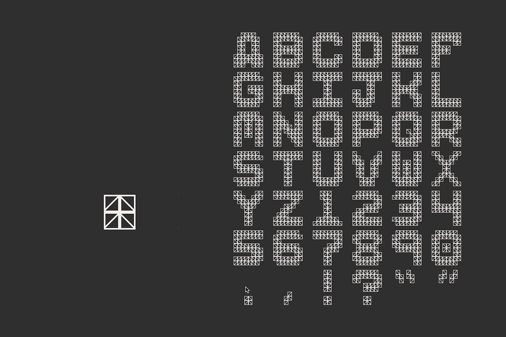
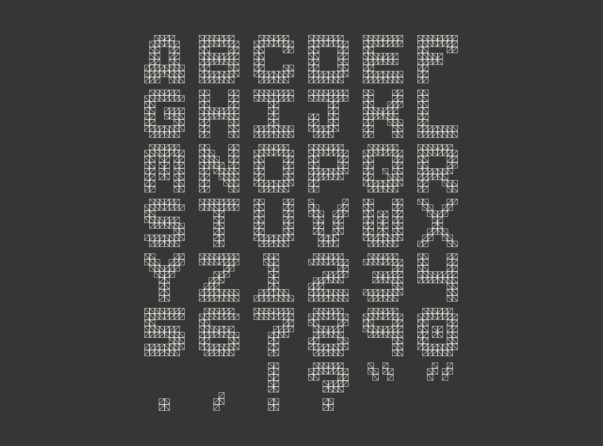
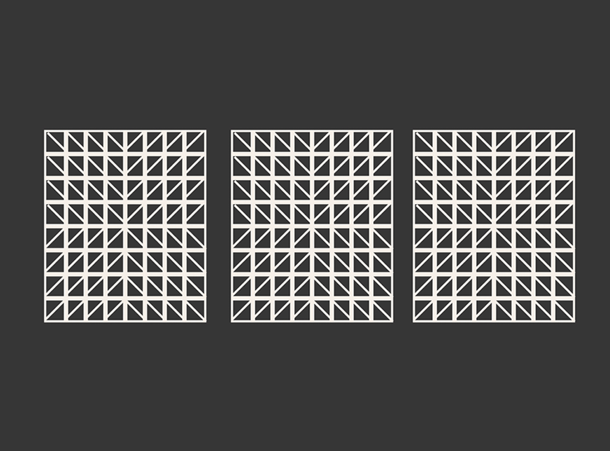

CSS Typeface
Using code as a drawing tool, this typeface was built strictly from CSS styling.
Each letterform was created through simple web drawing with CSS and built by a modular system of tiny triangles. Hover states within the web environment allow users to interact with the typeface.

The full type specimen.
There is dynamism and responsiveness in type when built inside digital environments and that has allowed this project to remain complex in form while staying quick and agile in it’s function. 